대기환경기사 (2009-05-10 기출문제)
1과목: 대기오염 개론
1. 다음 중 대기 중에서 태양광선을 받아 광화학반응을 일으켜 생성되는 2차 오염물질에 해당하지 않는 것은?
- CH3ONO2
- O3
- H2O2
- C3H8
(정답률: 50%)

2. 아래의 광화학반응에서 A, B, C 에 해당하는 물질로 가장 적합한 것은?
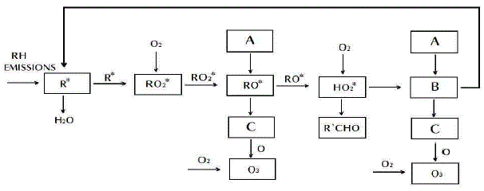
- A = OH·, B = NO2, C = NO
- A = NO2, B = NO, C = OH·
- A = NO , B = OH· C = NO2
- A = NO2 , B = OH·, C = NO
(정답률: 34%)
3. 다음 중 다이옥신에 관한 설명으로 가장 거리가 먼 것은?
- 가장 유해한 다이옥신은 2, 3, 7, 8 - tetrachloro dibenzo-p-dioxin 으로 알려져 있다
- PCDF계는 75개 PCDD계는 135개의 동족체가 존재한다.
- 벤젠 등에 용해되는 지용성으로서 열적 안정성이 좋다.
- 유기성 고체물질로서 용출실험에 의해서도 거의 추출되지 않는 특징을 가지고 있다.
(정답률: 60%)
4. 다음 연기 형태 중 부채형(Fanning)에 관한 설명으로 가장 거리가 먼 것은?
- 주로 저기압구역에서 굴뚝 높이보다 더 낮게 지표가까이에 역전층이, 그 상공에는 불안정상태일 때 발생한다.
- 굴뚝의 높이가 낮으면 지표부근에 심각한 오염문제를 발생시킨다.
- 대기가 매우 안정된 상태일 때에 아침과 새벽에 잘 발생한다.
- 풍향이 자주 바뀔 때면 뱀이 기어가는 연기모양이 된다.
(정답률: 38%)
5. 다음 Gaussian 분산식에 대한 설명으로 가장 적합한 것은?
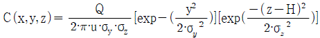
- 비정상상태에서 불연속적으로 배출하는 면오염원으로부터 바람방향이 배출면에 수평인 경우 풍하측의 지면농도를 산출하는 경우에 사용한다.
- 공중역전이 존재할 경우 역전층의 오염물질의 상향확산에 의한 일정고도 상에서의 중심축상 선오염원의 농도를 산출하는 경우에 사용한다.
- 지표면으로부터 고도 H에 위치하는 점원-지면으로부터 반사가 있는 경우에 사용한다.
- 연속적으로 배출하는 무한의 선오염원으로부터 바람의 방향이 배출선에 수직인 경우 플룸내에서 소멸되는 풍하측 지면농도를 산출하는 경우에 사용한다.
(정답률: 62%)
6. 다음은 대기오염물질에 관한 설명이다. ( )안에 공통으로 들어갈 가장 알맞은 것은?
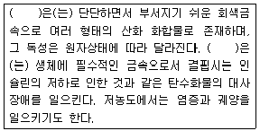
- Co
- Cr
- As
- V
(정답률: 50%)
7. 다음 중 C6H5OH 배출관련 업종과 가장 거리가 먼 것은?
- 타르공업
- 화학공업
- 정련공업
- 도장공업
(정답률: 52%)
8. 다음은 황화합물에 관한 설명이다. ( )안에 가장 알맞은 것은?
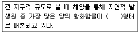
- H2S
- CS2
- DMS[(CH3)2S]
- OCS
(정답률: 54%)
9. 성층권의 오존층 파괴의 원인물질인 CFC 화합물 중 CFC-12의 화학식은?
- CF2Cl2
- CHFCl2
- CFCl3
- CHF2Cl
(정답률: 74%)
10. 휘발성 유기화합물에 대한 설명으로 옳지 않은 것은?
- 전지구적으로 볼 때, 인위적인 NMHC(Non Methane HydroCarbon)가 자연에서 발생되는 생물학적 NMHC보다 10배 이상 많다.
- 일반적 의미의 휘발성 유기화합물은 NMHC, 할로겐족 탄화수소 화합물, 알콜, 알데히드, 케톤 같은 산소결합 탄화수소 화합물들을 내포한다.
- 자연적인 휘발성 유기화합물은 대류권의 오존생성 및 지구온난화 등과도 관련이 있다.
- 인위적 배출량 중 페인트, 잉크, 용제 등의 사용에 의한 배출량도 많은 부분을 차지하고 있다.
(정답률: 63%)
11. 온실기체와 관련한 다음 설명 중 ( )안에 가장 알맞은 것은?
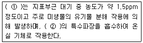
- ① CO2 , ② 적외선
- ① CO2 , ② 자외선
- ① CH4 , ② 적외선
- ① CH4 , ② 자외선
(정답률: 50%)
12. 1984년 인도 중부지방의 보팔시에서 발생한 대기오염사건의 원인물질은?
- SOx
- H2S
- CH3CNO
- COCl2
(정답률: 53%)
13. 굴뚝 통풍력에 관한 다음 설명 중 가장 거리가 먼 것은?
- 굴뚝 높이가 높고, 단면적이 클수록 통풍력은 커진다.
- 배출가스의 온도가 높을수록, 계절별로는 여름보다는 겨울이 통풍력이 작아진다.
- 굴뚝내의 굴곡이 없을수록 통풍력이 커진다.
- 외기주입이 없을수록 통풍력이 커진다.
(정답률: 49%)
14. 다음 중 침강역전과 상대비교한 복사역전에 관한 설명으로 가장 거리가 먼 것은?
- 복사역전은 장기간 지속되어 단기적인 문제보다는 주로 대기오염물의 장기 축적에 기여한다.
- 복사역전은 지표 가까이에 형성되므로 지표역전이라고도 한다.
- 복사역전은 대기오염물질 배출원이 위치하는 대기층에서 발생된다.
- 복사역전은 일출직전에 하늘이 맑고 바람이 없는 경우에 강하게 생성된다.
(정답률: 67%)
15. 직경 4m인 굴뚝에서 연기가 10m/s의 속도로 풍속 5m/s인 대기로 방출된다. 대기는 27℃, 중립상태.
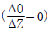
이고, 연기의 온도가 167℃ 일 때 TVA모델에 의한연기의 상승고(m)는? ( 단, TVA모델 :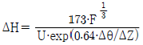
부력계수F=[g·Vs·d2·(Ts-Ta)]/4·Ta를 이용할것)- 약 124m
- 약 145m
- 약 165m
- 약 196m
(정답률: 65%)
16. 스테판-볼츠만의 법칙에 따르면 흑체복사를 하는 물체에서 물체의 표면온도가 1500K에서 2000K로 변화한다면, 복사에너지는 몇 배로 변화되는가?
- 1.25배
- 1.33배
- 2.56배
- 3.16배
(정답률: 78%)
17. 다음 중 Panofsky에 의한 리차드슨수(Ri) 크기와 대기의 혼합간의 관계에 따른 설명으로 거리가 먼 것은?
- Ri=0 : 수직방향의 혼합이 없다.
- 0 ＜ Ri ＜ 0.25 : 성층에 의해 약화된 기계적 난류가 존재한다.
- Ri ＜ -0.04 : 대류에 의한 혼합이 기계적 혼합을 지배한다.
- -0.03 ＜ Ri ＜ 0 : 기계적 난류와 대류가 존재하나 기계적 난류가 혼합을 주로 일으킨다.
(정답률: 57%)
18. 빛의 소멸계수(σext) 0.45km-1인 대기에서, 시정거리의 한계를 빛의 강도가 초기 강도의 95%가 감소했을 때의 거리라고 정의할 때, 이 때 시정거리 한계는? (단, 광도는 Lambert - Beer 법칙을 따르며, 자연대수로 적용)
- 약 12.4km
- 약 8.7km
- 약 6.7km
- 약 0.1km
(정답률: 65%)
19. 대기 중에 배출된 “A”라는 물질은 광분해반응(1차 반응)에 의해 반감기 2hr의 속도로 분해된다. “A”물질이 대기 중으로 배출되어 초기농도의 80%가 분해되는데 소요되는 시간은?
- 약 0.6hr
- 약 2.5hr
- 약 3.1hr
- 약 4.6hr
(정답률: 53%)
20. 다음 중 주로 연소시에 배출되는 무색의 기체로 물에 매우 난용성이며, 혈액 중의 헤모글로빈과 결합력이 강해 산소 운반능력을 감소시키는 물질은?
- PAN
- 알데히드
- NO
- HC
(정답률: 69%)
2과목: 연소공학
21. 탄소 84.0%, 수소 13.0%, 황 2.0%, 질소 1.0%의 조성을 가지는 중유를 1kg당 15Sm3의 공기로 완전연소 할 경우 습배출가스 중의 황산화물의 부피농도(ppm)는? (단, 표준상태 기준)
- 약 750ppm
- 약 800ppm
- 약 850ppm
- 약 890ppm
(정답률: 47%)
22. 옥탄 5.3kg을 완전연소 시키기 위하여 소요되는 이론공기량은?(오류 신고가 접수된 문제입니다. 반드시 정답과 해설을 확인하시기 바랍니다.)
- 약 60kg
- 약 75kg
- 약 80kg
- 약 95kg
(정답률: 56%)
23. 공기를 아래서 위로 통과시키는 화격자 연소장치에서 (1) - (2) - (3) - (4) 각각에 해당되는 물질은? (단, 아래 그림은 상입식 연소장치(석탄의 공급방향이 1차 공기의 공급방향과 반대)의 하부층에서부터 상부층까지의 성분가스의 체적분율(%)이다.)
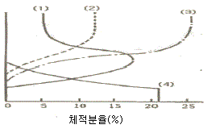
- CO2 - CO - (H2 + CH4) - O2
- CO - (H2 + CH4) - O2 - CO2
- (H2 + CH4) - O2 - CO2 - CO
- O2 - CO2 - CO - (H2 + CH4)
(정답률: 53%)
24. 다음 기체연료의 일반적인 특징으로 가장 거리가 먼 것은 ?
- 연소조절, 점화 및 소화가 용이한 편이다.
- 회분이 거의 없어 먼지발생량이 적다.
- 연료의 예열이 쉽고, 저질연료도 고온을 얻을 수 있다.
- 부하변동의 범위가 좁다.
(정답률: 62%)
25. 착화온도에 관한 설명으로 틀린 것은?
- 동질성 물질에서 발열량이 클수록 낮아진다.
- 화학결합의 활성도가 작을수록 낮아진다.
- 비표면적이 클수록 낮아진다.
- 공기의 산소농도 및 압력이 높을수록 낮아진다.
(정답률: 44%)
26. 다음 기체 연료에 관한 설명 중 옳은 것은?
- 프로판의 고위발열량은 메탄보다 높다.
- LNG의 주성분은 프로판과 프로필렌이다.
- 석탄의 완전연소시 얻어지는 발생로 가스의 주성분은 CO2, H2이며, 발열량은 23000kcal/Sm3 정도이다.
- LPG의 고발열량은 10000 kcal/Sm3 정도이다.
(정답률: 56%)
27. 연소(화염)온도에 대한 설명으로 가장 적합한 것은?
- 이론 단열 연소온도는 실제 연소온도보다 높다.
- 공기비를 크게 할수록 연소온도는 높아진다.
- 실제 연소온도는 연소로의 열손실에는 거의 영향을 받지 않는다.
- 평형 단열 연소온도는 이론 단열 연소온도와 같다.
(정답률: 50%)
28. 에탄의 이론 건조연소가스량(Sm3/Sm3)은?
- 15.2
- 16.7
- 18.8
- 21.8
(정답률: 42%)
29. 탄소 82%, 수소 18% 조성을 갖는 액체연료의 CO2max(%)는? (단, 표준상태 기준)
- 15.8%
- 14.8%
- 13.8%
- 12.8%
(정답률: 62%)
30. 연소반응에서 반응속도상수 k를 온도의 함수인 다음 반응식으로 나타낸 법칙은?
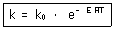
- 헨리의 법칙
- 아레니우스의 법칙
- 보일-샬의 법칙
- 반데르발스의 법칙
(정답률: 70%)
31. CH4 ; 30% , C2H6 ; 30% , C3H8 ; 40% 인 혼합가스의 폭발범위로 가장 적합한 것은? (단, CH4 폭발범위 ; 5-15% , C2H6 폭발범위 ; 3-12.5% , C3H8 폭발범위 ; 2.1-9.5% , 르샤틀리의 식 적용)
- 약 2.9 - 11.6%
- 약 3.4 - 12.8%
- 약 4.2 - 13.6%
- 약 5.8 - 15.4%
(정답률: 56%)
32. 다음 중 매연 발생원인으로 가장 거리가 먼 것은?
- 연소실의 체적이 적을 때
- 통풍력이 부족할 때
- 석탄 중에 황분이 많을 때
- 무리하게 연소시킬 때
(정답률: 48%)
33. 다음 설명하는 연소장치로 가장 적합한 것은?
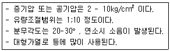
- 고압공기식 버너
- 유압식 버너
- 저압공기분무식 버너
- 슬래그탭 버너
(정답률: 74%)
34. S함량 2.5%인 벙커 C유 100 kL를 사용하는 보일러에 S함량 5.5%인 벙커 C유를 50% 섞어서(S함량 2.5%인 벙커 C유 50 kL + S함량 5.5%인 벙커 C유 50 kL) 사요한다면 S의 배출량은 약 몇 % 증가하겠는가? ( 단, 황은 전량배출되며, B - C유의 비중은 0.95 , %는 무게기준이다.)
- 60%
- 70%
- 75%
- 70%
(정답률: 50%)
35. 미분탄 연소에 관한 설명으로 옳지 않은 것은?
- 부하변동에 쉽게 적용할 수 있으므로 대형과 대용량 설비에 적합하다.
- 분쇄기 및 배관 중에 폭발의 우려 및 수송관의 마모가 일어날 수 있다.
- 연소에 요하는 시간은 대략 입자 지름의 제곱에 반비례하고, 화염전파속도는 기체연료에 비해 작다.
- 스토커연소에 비해 공기와의 접촉 및 열전달도 좋아지므로 작은 공기비로 완전연소가 가능한 편이다.
(정답률: 57%)
36. 다음 액화석유가스(LPG)에 대한 설명으로 거리가 먼 것은?
- 비중이 공기보다 무거워 누출 시 인화·폭발의 위험성이 높은 편이다.
- 액체에서 기체로 기화할 때 증발열이 5-10 kcal/kg로 작아 취급이 용이하다.
- 발열량이 높은 편이며, 황분이 적다.
- 천연가스에서 회수되거나 나프타의 분해에 의해 얻어지기도 하지만 대부분 석유정제시 부산물로 얻어진다.
(정답률: 58%)
37. 1.5%(무게기준) 황분을 함유한 석탄 1143kg을 이론적으로 완전연소시킬 때 SO2 발생량(Sm3)은? (단, 표준상태 기준이며, 황분은 전량 SO2로 전환된다.)
- 12Sm3
- 18Sm3
- 21Sm3
- 24Sm3
(정답률: 73%)
38. 다음 중 공기비(m ＞ 1)에 관한 식으로 틀린 것은?(단, 실제공기량 ; A, 이론공기량 ; Ao, 배출가스중 질소량 ; N2(%), 배출가스중 산소량 ; O2(%))
- m = A/Ao
- m = 21 / (21 - O2 )
- m = 1 + (과잉공기량 / Ao)
- m = N2 / (N2 - 4.76O2 )
(정답률: 62%)
39. 다음 연료 및 연소에 관한 설명으로 틀린 것은?
- 휘발유, 등유, 경유, 중유 중 비점이 가장 높은 연료는 휘발유 이다.
- 연소라 함은 고속의 발열반응으로 일반적으로 빛을 수반하는 현상의 총칭이다.
- 탄소성분이 많은 중질유 등의 연소에서는 초기에는 증발연소를 하고, 그 열에 의해 연료성분이 분해되면서 연소한다.
- 그을림연소는 숯불과 같이 불꽃을 동반하지 않는 열분해와 표면연소의 복합 형태라 볼 수 있다.
(정답률: 50%)
40. 다음 그림은 탄소를 연소시킬 경우에 공급한 산소의 확산속도 및 산화반응속도(열의 발생속도)와 온도와의 관계를 나타낸다. K점 이상에서의 온도에서 이루어지는 현상으로 옳은 것은?
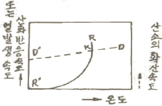
- 산화반응이 증대되고 열발생 속도가 KR에 따른다.
- 산화반응이 억제되고 열발생 속도가 KD에 따른다.
- 산화반응이 증대되고 열발생 속도가 KD에 따른다.
- 산화반응이 억제되고 열발생 속도가 KR에 따른다.
(정답률: 37%)
3과목: 대기오염 방지기술
41. 다음 중 석유정제시 배출되는 H2S의 제거에 널리 사용되어 왔던 세정제는?
- 암모니아 수
- 사염화탄소
- 다이에탄올아민 용액
- 수산화칼슘 용액
(정답률: 67%)
42. 여과집진장치 설계 시 고려사항 중 가장 거리가 먼 것은?
- 여과주머니의 직경에 대한 길이의 비(L/D)를 너무 크게하면 주머니들끼리 마찰할 위험이 있고, 먼지제거가 곤란하므로 통상 L/D 비는 20 이하가 좋다.
- 제거된 먼지의 자동 연속적 작동방식은 소제를 위해 주기적인 가동중단이 요구되지 않거나 불가능한 경우에 주로 채택된다.
- 여과섬유 중 teflon은 여과율이 1-2m/min 정도이며, 연소 유지성이 cotton 및 nylon에 비해 우수하며, 경제적이다.
- 여포는 가스 온도가 가급적 250℃를 넘지 않도록 주의해야 하고, 특히 고온가스의 냉각시에는 산노점 이상으로 유지해야 한다.
(정답률: 35%)
43. 다음은 휘발유엔진 배가가스에 영향을 미치는 사항에 관한 설명이다. ( )안에 알맞은 것은?
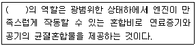
- Wankel engine
- Charger
- Carburetor
- ABS
(정답률: 69%)
44. 가스흡수장치인 충전탑(Packed Tower)에 관한 설명 중 틀린 것은?
- 액분산형 흡수장치로서 충전물의 충전방식을 불규칙적으로 했을 때 접촉면적은 크나, 압력손실이 커진다.
- 충전탑에서 Hold-Up 이라는 것은 탑의 단위면적당 충전제의 양을 의미한다.
- 흡수액에 고형물이 함유되어 있는 경우에는 침전물이 생기는 방해를 받는다.
- 일정량의 흡수액을 흘릴 때 유해가스의 압력손실은 가스속도의 대수값에 비례하며, 가스속도 증가시 나타나는 첫 번째 파괴점을 부하점(Loading Point)이라 한다.
(정답률: 67%)
45. Cl2 농도가 0.35%인 배출가스 4500Sm3/hr를 Ca(OH)2 현탄액으로 세정처리하여 제거하고자 할 때 이론적으로 필요한 Ca(OH)2의 양(kg/h)은?
- 44kg/hr
- 49kg/hr
- 52kg/hr
- 66kg/hr
(정답률: 59%)
46. A집진장치에서의 배출가스 유량은 12000 m3/hr, 압력손실이 350 mmH2O 라고 할 때, 필요한 송풍기의 소요동력은? (단, 송풍기 효율은 80%, 여유율은 1.15 이다.)
- 약 14.3kW
- 약 16.4kW
- 약 18.5kW
- 약 21.5kW
(정답률: 56%)
47. 원심력집진장치에서 외부선회류에 의해 입자에 작용하는 최대원심력의 관계식으로 옳은 것은? (단, Fc: 최대원심력, dp: 입자직경, ρp: 입자밀도, Vo: 원심력이 최대가되는 Rc 지점에서의 선회류의 접선속도, Rc: 원추하부의 반경)(오류 신고가 접수된 문제입니다. 반드시 정답과 해설을 확인하시기 바랍니다.)
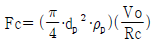
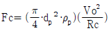
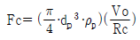
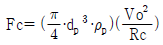
(정답률: 60%)
48. 0.25㎛ 직경을 가진 구형 물입자(Water Droplet) 하나에 포함되어 있는 물분자수는 몇 개인가?
- 약 1.75 × 107개
- 약 4.38 × 107개
- 약 1.75 × 108개
- 약 2.74 × 108개
(정답률: 24%)
49. 여과집진장치의 탈진방식에 관한 다음 설명 중 옳지 않은 것은?
- 연속식에는 역제트기류 분사형과 충격제트기류 분사형 등이 있다.
- 연속식은 포집과 탈진이 동시에 이루어지므로 압력손실이 거의 일정하고 고농도, 대용량의 가스를 처리할 수 있다.
- 간헐식은 먼지의 재비산이 적고, 높은 집진율을 얻을 수 있으며, 여포의 수명은 연속식에 비해 길다.
- 충격제트기류 분사형은 여과자루에 상하로 이동하는 불로워에 몇 개의 슬롯을 설치하고 여기에 고속제트기류를 주입하여 여과자루를 위, 아래로 이동하면서 탈진하는 방식으로 내면여과이다.
(정답률: 50%)
50. 덕트 직경 30cm, 공기유속 15m/s 일 때, 레이놀즈수는? (단, 공기점성계수 약 1.85 × 10-5 kg/m·sec, 공기밀도 1.2kg/m3이다.)
- 약 290000
- 약 330000
- 약 360000
- 약 390000
(정답률: 53%)
51. 2개의 집진장치를 조합하여 먼지를 제거하려고 한다. 2개를 직렬로 연결하는 방식(A)과 2개를 병렬로 연결하는 방식(B)에 대한 다음 설명 중 가장 거리가 먼 것은?(단, 각 집진장치의 처리량과 집진율은 80% 로 둘다 동일하다고 가정한다.)
- (A)방식이 (B)방식보다 더 일반적이다.
- (B)방식은 처리가스의 양이 많은 경우에 사용된다.
- (A)방식의 총집진율은 94% 이다.
- (B)방식의 총집진율은 단일집진장치 때와 같이 80% 이다.
(정답률: 53%)
52. 유해가스 처리를 위한 흡착장치에 관한 다음 설명 중 가장 거리가 먼 것은?
- 고정상 흡착장치에서 처리가스를 연속적으로 처리하고자 할 경우에는 회분식(Batchtype) 흡착장치 2개를 병렬로 연결하여 흡착과 재생을 교대로 한다.
- 고정상 흡착장치에서 활성탄의 재생은 흡착된 오염물질의 탈착, 활성탄 냉각 및 재사용의 3단계로 구분할 수 있다.
- 유동상 흡착장치는 가스의 유속을 크게 유지할 수 있고, 고체와 기체의 접촉을 좋게 할 수 있다.
- 고정상 흡착장치에서 처리가스의 양이 적을 경우에는 수평형이나 실린더형이 유용하지만, 많을 경우에는 수직형이 더 유리하다.
(정답률: 73%)
53. 배출가스 중에 함유된 질소산화물 처리를 위한 건식법 중 선택적 촉매환원법(SCR)에 대한 설명으로 옳지 않은 것은?
- 환원제로는 NH3가 사용된다.
- 질소산화물 전환율은 반응온도에 따라 종모양(Bell - Shape)을 나타낸다.
- 질소산화물이 촉매에 의하여 선택적으로 환원되어 질소분자와 물로 전환된다.
- 촉매 선택성에 의해 NO의 환원반응만 있고, 기타 산화반응 등의 부반응은 없다.
(정답률: 41%)
54. 충전탑내 상부에서 흐르는 액체는 충전제 전체를 적시면서 고르게 분포하는 것이 가장 좋다. 균일한 액의 분포를 위하여 (D/d)비는 다음 중 얼마로 하는 것이 가장 이상적(편류현상 최소)인가? (단, 충전탑의 지름 : D , 충전제의 지름 : d)
- 1 - 2 정도
- 8 - 10 정도
- 40 - 70 정도
- 50 - 100 정도
(정답률: 48%)
55. 어떤 유해가스와 물이 일정온도에서 평형상태에 있다면 헨리상수(atm·m3/kmol)는? (단, 기상의 유해가스 분압이 58 mmHg 일 때 수중유해가스의 농도는 3.5kgmol/m이며, 전압은 1atm 이다.)(오류 신고가 접수된 문제입니다. 반드시 정답과 해설을 확인하시기 바랍니다.)
- 약 1.6 × 10-3
- 약 3.2 × 10-3
- 약 4.8 × 10-3
- 약 6.4 × 10-3
(정답률: 36%)
56. A굴뚝 배출가스 중의 염화수소 농도가 250ppm 이었다. 염화수소의 배출허용기준을 80 mg/Sm3 로 하면 염화수소의 농도를 현재 값의 몇 % 이하로 하여야 하는가? (단, 표준상태 기준)
- 약 10% 이하
- 약 20% 이하
- 약 30% 이하
- 약 40% 이하
(정답률: 31%)
57. 입자상 물질의 특성에 관한 다음 설명 중 가장 거리가 먼 것은?
- 입자의 크기가 작을수록 표면에 존재하는 원자와 내부에 존재하는 원자와의 비가 크게 되어 상호 응집하거나 이물질에 쉽게 부착한다.
- 입자의 크기가 작을수록 다른 물질과 쉽게 반응하여 폭발성을 지니게 될 경우가 많다.
- 보통 0.01㎛ 이하는 가스분자와 같이 브라운 운동을 하기 때문에 가스상 물질로 취급한다.
- 입자의 크기는 발생원에 따라 달라지나 일반적으로 화학적 요인보다 물리적 요인에 의해 생성된 입자상 물질의 입경이 작게 된다.
(정답률: 38%)
58. 다음은 가솔린엔진에서 공연비(Air / Fuel Ratio)와 배출오염물질의 농도관계를 나타내는 그래프이다. 이 중에서 NOx의 농도 경향을 나타내는 것은?
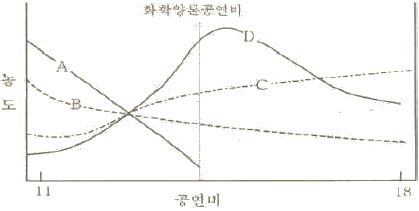
- A
- B
- C
- D
(정답률: 50%)
59. 다음과 같은 일반적인 베르누이의 정리에 적용되는 조건이 아닌 것은?
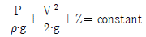
- 정상 상태의 흐름이다.
- 직선관에서만의 흐름이다.
- 같은 유선상에 있는 흐름이다.
- 마찰이 없는 흐름이다.
(정답률: 85%)
60. 황성분 1.1%인 중유를 15ton/h 으로 연소할 때 배출되는 가스를 CaCO3로 탈황하고 황을 석고(CaSO4·2H2O)로 회수하고자 할 경우 회수하는 석고의 양(ton/h)? (단, 황분은 100% SO2로 전환되고, 탈황율은 93%이다. )
- 약 0.2
- 약 0.5
- 약 0.8
- 1.4
(정답률: 53%)
4과목: 대기오염 공정시험기준(방법)
61. 화학분석 일반사항에 관한 설명으로 옳지 않은 것은?
- 상온은 15~25℃, 실온은 1~35℃로 하고, 찬곳은 따로 규정이 없는 한 0~15℃의 곳을 뜻한다.
- 1억분율은 ppb, 10억분율은 pphm으로 표시하고 따로 표시가 없는 한 기체일 때는 용량대 용량(V/V), 액체일 때는 중량대 중양(W/W)을 표시한 것을 뜻한다.
- 표준품을 채취할 때 표준액이 정수로 기재되어 있어도 실험자가 환산하여 “약” 자를 붙여 사용할 수 있다.
- “냉후”(식힌 후)라 표시되어 있을 때는 보온 또는 가열 후 실온까지 냉각된 상태를 뜻한다.
(정답률: 73%)
62. 굴뚝 단면이 원형일 경우 먼지측정을 위한 측정점에 관한 설명으로 옳지 않은 것은?(오류 신고가 접수된 문제입니다. 반드시 정답과 해설을 확인하시기 바랍니다.)
- 굴뚝 직경이 4.5m를 초과할 때는 측정점수는 20 이다.
- 굴뚝 반경이 2.5m인 경우에 측정점수는 20 이다.
- 굴뚝 단면적이 1m2 이하로 소규모일 경우에는 그 굴뚝단면의 중심을 대표점으로 하여 1점만 측정한다.
- 굴뚝 직경이 1.5m인 경우에 반경 구분수는 2 이다.
(정답률: 48%)
63. 굴뚝 배출가스 내의 산소농도 측정방법 중 자동측정기에 의한 방법으로 거리가 먼 것은?
- 질코니아 분석계
- 전극방식 분석계
- 오르자트 분석계
- 자기력 분석계
(정답률: 42%)
64. 소각로에서 배출되는 입자상 및 가스상 수은을 환원기화 원자흡광광도법으로 분석할 때 사용되는 흡수액은?
- 질산암모늄 + 황산용액
- 산성과망간산칼륨용액
- 염산히드록실아민용액
- 시안화칼륨 + 디티존용액
(정답률: 37%)
65. 굴뚝 배출가스 내의 브롬화합물 분석방법 중 자외선 가시선 분광법(흡광광도법)에 관한 설명으로 옳지 않은 것은?
- 흡수액은 수산화나트륨 0.4g을 물에 녹여 100mL로 한다.
- 요오드화 칼륨용액(0.13W/V%)은 요오드화 칼륨 0.13g을 황산(1+5)에 녹여 250mL 메스플라스크에 넣고 물로 표선까지 채운다.
- 과망간산칼륨(0.32W/V%)용액은 과망간산칼륨 0.79g을 물에 녹여 250mL 메스플라스크에 넣고 물로 표선까지 채운다.
- 황산 제2철 암모늄 용액은 황산 제2철 암\모늄 6g을 질산(1+1) 100mL에 녹여 갈색병에 넣어 보관한다.
(정답률: 58%)
66. 다음은 가스크로마토그램에서 피이크(Peak)의 분리정도를 나타낸 그림이다. 분리계수(d)와 분리도(R)를 구하는 식으로 옳은 것은?
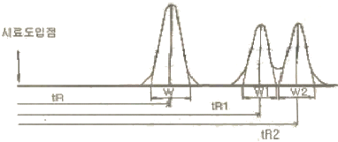
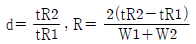
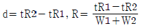
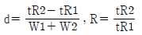
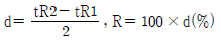
(정답률: 71%)
67. 원자흡광 분석장치에 관한 설명으로 가장 거리가 먼 것은?
- 램프점등장치 중 직류점등 방식은 광원의 빛 자체가 변조되어 있기 때문에 빛의 단속기(Chopper)는 필요하지 않다.
- 원자흡광분석용 광원은 원자흡광 스펙트럼선의 선폭보다 좁은 선폭을 갖고 휘도가 높은 스펙트럼을 방사하는 중공음극램프가 많이 사용된다.
- 시료를 원자화하는 d lf반적인 방법은 용액상태로 만든시료를 불꽃중에 분무하는 방법이며 플라즈마 젯트불꽃 또는 방전을 이용하는 방법도 있다.
- 전분무 버어너는 가연가스와 조연가스가 버어너 선단부에서 혼합되어 불꽃을 형성하고 이 때 빨아올린 시료용액은 모두 이 불꽃속으로 들어가게 된다.
(정답률: 50%)
68. 다음 대상 가스별 분석방법의 연결로 옳은 것은? (단, 배출허용기준 시험방법)
- 포름알데히드 - 오르토톨리딘법
- 질소산화물 - 크로모트로핀산법
- 시안화수소 - 피리딘피라졸론법
- 페놀 - 페놀디슬폰산법
(정답률: 72%)
69. 다음은 환경대기 중에 부유하고 있는 입자상물질 측정방법이다. ( ① )안에 알맞은 것은?
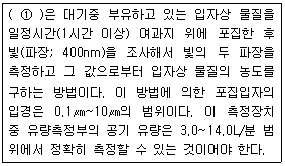
- 감마선법
- 광산란법
- 광투과법
- 베타선법
(정답률: 62%)
70. 다음은 시험의 기재 및 용어에 관한 설명이다. ( )안에 알맞은 것은?
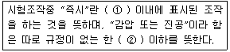
- ① 10초 , ② 15mmH2O
- ① 10초 , ② 15mmHg
- ① 30초 , ② 15mmH2O
- ① 30초 , ② 15mmHg
(정답률: 62%)
71. 굴뚝 배출가스를 습식가스미터를 사용하여 흡습관법으로 습윤가스의 수증기 백분율을 측정한 결과, 체적백분율로 10% 이었다. 이 때 흡수된 수분의 질량은? (단, 습윤가스의 온도는 70℃, 시료채취량은 10L, 대기압, 가스미터게이지압, 가스미터온도 70℃에서의 수증기포화압은 각각 0.6기압, 25mmHg, 270mmHg 이다.)
- 약 0.15g
- 약 0.2g
- 약 0.25g
- 약 0.3g
(정답률: 36%)
72. 다음 굴뚝 배출가스 중 아연환원나프틸에틸렌디아민법으로 분석할 수 있는 물질은?
- 브롬화합물
- 이황화탄소
- 페놀
- 질소산화물
(정답률: 34%)
73. 흡광광도법(Tbsorptiometric Analysis)에 관한 다음 설명중 가장 거리가 먼 것은?
- 가시부와 근적외부의 광원으로는 주로 텅스텐렘프를, 자외부의 광원으로는 주로 중수소 방전관을 사용한다.
- 광전관, 광전자증배관은 주로 자외 내지 가시파장 범위에서, 광전도셀은 근적외 파장범위에서의 광전측광에 사용한다.
- 흡수셀의 유리제는 주로 자외부 파장범위를, 플라스틱제는 근적외부 및 가시광선 파장범위를 측정할 때 사용한다.
- 흡광도의 눈금보정은 중크롬산칼륨용액으로 한다.
(정답률: 34%)
74. 다음은 자동측정기에 의한 아황산가스 연속측정법에 관한 설명이다. ( )안에 알맞은 것은?
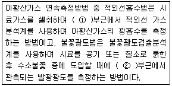
- ① 730nm, ② 254nm
- ① 730nm, ② 394nm
- ① 7300nm, ② 254nm
- ① 7300nm, ② 394nm
(정답률: 29%)
75. 비분산 적외선 분석법에서 측정성분이 흡수되는 적외선을 그 흡수파장에서 측정하는 방식은?
- 정필터형
- 복광필터형
- 화절격자형
- 적외선흡광형
(정답률: 50%)
76. 휘발성유기화합물질(VOC) 누출확인방법에 관한 설명으로 거리가 먼 것은?
- 검출불가능 누출농도는 누출원에서 VOC가 대기중으로 누출되지 않는다고 판단되는 농도로서 국지적 VOC배경농도의 최고 농도값이다.
- 휴대용 측정기기를 사용하여 개별 누출원으로부터의 직접적인 누출량을 측정한다.
- 누출농도는 VOC가 누출되는 누출원 표면에서의 농도로서 대조화합물을 기초로 한 기기의 측정값이다.
- 응답시간은 VOC가 시료채취장치로 들어가 농도 변화를 일으키기 시작하여 기기계기판의 최종값이 90%를 나타내는데 걸리는 시간이다.
(정답률: 48%)
77. 굴뚝 배출가스 내의 산소측정방법 중 담벨형(Dumb-Bell)자기력 분석계에 관한 설명으로 틀린 것은?(오류 신고가 접수된 문제입니다. 반드시 정답과 해설을 확인하시기 바랍니다.)
- 측정셀은 시료 유통실로서 자극사이에 배치하여 담벨 및 불균형 자계발생 자극편을 내장한 것이어야 한다.
- 편위검출부는 담벨의 편위를 검출하기 우한 것으로 광원부와 담벨봉에 달린 거울에서 반사하는 빛을 받는 수광기로 된다.
- 피드백코일은 편위량을 없애기 위하여 전류에 의하여 자기를 발생시키는 것으로 일반적으로 백금선이 이용된다.
- 담벨은 지가화율이 큰 유리등으로 만들어진 중공의 구체를 막대 양 끝에 부착한 것으로 수소 또는 헬륨을 봉입한 것이어야 한다.
(정답률: 15%)
78. 복원중(정확한 문제내용을 아시는분께서는 오류 신고를 통하여 보기 내용 작성 부탁드립니다. 문제 오류로 정답은 4번입니다.)
- 복원중 (정확한 보기내용을 아시는분께서는 오류 신고를 통하여 보기 내용 작성 부탁드립니다.)
- 복원중 (정확한 보기내용을 아시는분께서는 오류 신고를 통하여 보기 내용 작성 부탁드립니다.)
- 복원중 (정확한 보기내용을 아시는분께서는 오류 신고를 통하여 보기 내용 작성 부탁드립니다.)
- 복원중 (정확한 보기내용을 아시는분께서는 오류 신고를 통하여 보기 내용 작성 부탁드립니다.)
(정답률: 19%)
79. 이론단수가 1600인 분리관이 있다. 보유시간이 20분인 피크의 좌우변곡점에서 자르는 바탕선의 길이가 10mm일 때, 기록지 이동속도를 계산하면? (단, 이론단수는 모든 성분에 대하여 같다.)
- 2.5mm/min
- 5 mm/min
- 10mm/min
- 15mm/min
(정답률: 59%)
80. 다음은 이온크로마토그래프법의 검출기에 관한 설명이다. ( )안에 가장 적합한 것은?
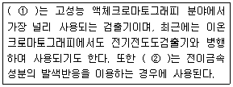
- ① 자외선흡수검출기, ② 기사선흡수검출기
- ① 전기화학적검출기, ② 염광광도검출기
- ① 이온전도도검출기, ② 전기화학적검출기
- ① 광전흡수검출기, ② 암페로메트릭검출기
(정답률: 53%)
5과목: 대기환경관계법규
81. 다음 중 대기환경보전법규상 고체연료환산계수가 가장 큰 것은? (단위: kg)
- 코크스
- 이탄
- 메탄올
- 유연탄
(정답률: 36%)
82. 환경정책기본법상 관계 행정기관의 장이 협의절차가 완료되기 전에 시행한 개발사업에 대하여 원상복구명령을 이행하지 아니한 자에 대한 벌칙기준으로 옳은 것은?
- 5년 이하의 징역 또는 5천만원 이하의 벌금
- 3년 이하의 징역 또는 3천만원 이하의 벌금
- 2년 이하의 징역 또는 2천만원 이하의 벌금
- 500만원 이하의 과태료
(정답률: 32%)
83. 대기환경보전법령상 일일유량은 측정유량과 일일조업시간의 곱으로 환산하는데, 다음 중 일일조업시간의 표시기준으로 옳은 것은? (단, 각각의 항목은 규정된 단위를 사용한다.)
- 배출량을 측정하기 전 최근 조업한 30일 동안의 배출시설 조업시간 평균치를 시간으로 표시한다.
- 배출량을 측정하기 전 최근 조업한 30일 동안의 배출시설 조업시간 최대치를 시간으로 표시한다.
- 배출량을 측정하기 전 최근 조업한 1년 동안의 배출시설 조업시간 평균치를 시간으로 표시한다.
- 배출량을 측정하기 전 최근 조업한 1년 동안의 배출시설 조업시간 최대치를 시간으로 표시한다.
(정답률: 50%)
84. 환경정책기본법령상 대기환경기준(1시간 평균치 기준)의 연결로 옳은 것은?(단, ① 아황산가스(SO2), ② 이산화질소(NO2) 이다.)
- ① 0.⑤ppm 이하, ② 0.06ppm 이하
- ① 0.06ppm 이하, ② 0.⑤ppm 이하
- ① 0.15ppm 이하, ② 0.10ppm 이하
- ① 0.10ppm 이하, ② 0.15ppm 이하
(정답률: 60%)
85. 대기환경보전법규상 자동차연료 제조기준 중 2009년 1월 1일부터 적용되는 휘발유의 황함량(ppm) 기준은?
- 50 이하
- 20 이하
- 10 이하
- 5 이하
(정답률: 48%)
86. 다음은 대기환경보전법상 실천계획 수립에 관한 사항이다. ( )안에 알맞은 것은?
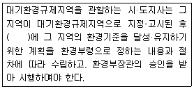
- 1년 이내
- 2년 이내
- 5년 이내
- 10년 이내
(정답률: 32%)
87. 다음 중 대기환경보전법령상 “3종 사업장”에 해당되는 것은?
- 대기오염물질발생량의 합계가 연간 8톤인 사업장
- 대기오염물질발생량의 합계가 연간 12톤인 사업장
- 대기오염물질발생량의 합계가 연간 22톤인 사업장
- 대기오염물질발생량의 합계가 연간 52톤인 사업장
(정답률: 77%)
88. 다중이용시설 등의 실내공기질 관리법상 시·도지사는 다중이용시설이 규정에 따른 공기질 유지기준에 맞지 아니하게 관리되는 경우에는 환경부령이 정하는 바에 따라 기간을 정하여 그 다중이용시설의 소유자 등에게 환기설비의 개선 등의 개선명령을 할 수 있는데, 이 개선명령을 이행하지 아니한 사업자에 대한 벌칙기준으로 옳은 것은?
- 7년 이하의 징역 또는 7천만원 이하의 벌금
- 5년 이하의 징역 또는 5천만원 이하의 벌금
- 1년 이하의 징역 또는 1천만원 이하의 벌금
- 200만원 이하의 벌금
(정답률: 40%)
89. 대기환경보전법규상 위임업무의 보고횟수 기준이 연 2회에 해당되는 업무 내용은?
- 휘발성유기화합물 배출시설 설치신고 현황
- 비산먼지 발생대상사업 신고현황
- 첨가제의 제조기준 적합여부 검사현황
- 수입자동차 배출가스 인증 및 검사현황
(정답률: 25%)
90. 다음은 대기환경보전법규상 대기오염경보단계별 대기오염물질의 농도기준이다. ( )안에 알맞은 것은?
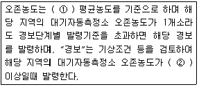
- ① 1시간 , ② 0.12피피엠
- ① 1시간 , ② 0.3피피엠
- ① 24시간 , ② 0.12피피엠
- ① 24시간 , ② 0.3피피엠
(정답률: 25%)
91. 대기환경보전법령상 기본부과금의 지역별 부과계수로 옳은 것은? (단, Ⅰ지역; 주거지역, Ⅱ지역; 공업지역, Ⅲ지역; 녹지지역으로 본다.)
- Ⅰ지역; 0.5, Ⅱ지역; 1.0, Ⅲ지역; 1.5
- Ⅰ지역; 1.5, Ⅱ지역; 1.0, Ⅲ지역; 0.5
- Ⅰ지역; 1.5, Ⅱ지역; 0.5, Ⅲ지역; 1.0
- Ⅰ지역; 0.5, Ⅱ지역; 1.0, Ⅲ지역; 1.2
(정답률: 54%)
92. 다음은 대기환경보전법규상 자가측정 대상 및 방법에 관한기준이다. ( )안에 알맞은 것은?
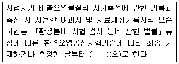
- 3개월
- 6개월
- 1년
- 3년
(정답률: 43%)
93. 다중이용시설 등의 실내공기질 관리법규상 도서관·박물관 및 미술관에서의 VOC(㎍/m3)의 실내공기질 권고기준은?
- 400 이하
- 500 이하
- 600 이하
- 1000 이하
(정답률: 47%)
94. 대기환경보전법규상 특정대기유해물질에 해당하지 않는 것은?
- 황화수소
- 아날린
- 에틸렌옥사이드
- 에틸벤젠
(정답률: 40%)
95. 대기환경보전법령상 초과부과금 산정기준에서 다음 중 오염물질 1킬로그램당 부과금액이 가장 적은 것은?
- 이황화탄소
- 암모니아
- 황화수소
- 불소화합물
(정답률: 48%)
96. 다음은 대기환경보전법규상 비산먼지 발생을 억제하기위한 시설의 설치 및 필요한 조치에 관한 엄격기준이다. ( )안에 알맞은 것은?
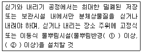
- ① 5m , ② 2.5kg/cm2
- ① 5m , ② 5kg/cm2
- ① 7m , ② 2.5kg/cm2
- ① 7m , ② 5kg/cm2
(정답률: 54%)
97. 대기환경보전법규상 배출허용기준초과에 따른 개선명령을 받는 경우 개선하여야 할 사항이 배출시설 또는 방지시설일 때 개선계획서에 포함되어야 할 사항 또는 서류로 가장 거리가 먼 것은?
- 배출시설 또는 방지시설의 개선명세서 및 설계도
- 대기오염물질의 처리방식 및 처리효율
- 측정 기기의 운영, 관린 진단 계획
- 공사기간 및 공사비
(정답률: 44%)
98. 대기환경보전법령상 특별대책지역에서 환경부령으로 정하는 바에 따라 신고해야 하는 휘발성유기화합물 배출시설 중 “대통령령으로 정하는 시설”에 해당하지 않는 것은? (단, 그 밖에 휘발성유기화합물을 배출하는 시설로서 환경부장관이 관계 중앙행정기관의 장과 협의하여 고시하는 시설은 제외한다.) (문제 오류로 정답은 1번입니다.)
- 복원중 (정확한 보기내용을 아시는분께서는 오류 신고를 통하여 보기 내용 작성 부탁드립니다.)
- 복원중 (정확한 보기내용을 아시는분께서는 오류 신고를 통하여 보기 내용 작성 부탁드립니다.)
- 복원중 (정확한 보기내용을 아시는분께서는 오류 신고를 통하여 보기 내용 작성 부탁드립니다.)
- 복원중 (정확한 보기내용을 아시는분께서는 오류 신고를 통하여 보기 내용 작성 부탁드립니다.)
(정답률: 46%)
99. 대기환경보전법규상 배출시설 및 방지지설 등과 관련한 행정처분기준중 환경부장관 등이 명한 황함유기준을 초과하는 연료의 제조, 공급, 판매 또는 사용금지, 제한 등 필요한 조치명령을 이행하지 아니한 경우 각 위반차수별 행정처분기준으로 옳은 것은? (단, 1차-2차-3차-4차 순임)
- 경고-조업정지 5일-조업정지 10일-조업정지 20일
- 조업정지 5일-조업정지 10-조업정지 30일-조업정지 60일
- 조업정지 10일-조업정지 20-조업정지 30일-허가취소 또는 폐쇄
- 경고 - 조업정지 30일 - 허가취소 - 폐쇄
(정답률: 24%)
100. 대기환경보전법령상 배출허용기준초과와 관련하여 개선명령을 받은 사업자의 개선계획서의 제출기한은? (단, 기간 연장은 제외)
- 명령을 받은 날부터 10일 이내
- 명령을 받은 날부터 15일 이내
- 명령을 받은 날부터 30일 이내
- 명령을 받은 날부터 60일 이내
(정답률: 47%)
설명: CH3ONO2는 질산메틸로, 자동차와 산업 등에서 발생하는 질산메틸은 태양광선과 반응하여 광화학 스모그를 일으키는 주요 원인 중 하나입니다. O3는 오존으로, 자동차와 산업 등에서 발생하는 질산메틸과 질산에틸 등의 VOC와 태양광선이 반응하여 생성됩니다. H2O2는 과산화수소로, 대기 중에서 자연적으로 생성되는 것은 거의 없으며, 대기 오염물질 중 일부인 VOC와 NOx 등이 반응하여 생성됩니다. 반면에 C3H8은 메탄의 구조 이성질체 중 하나로, 태양광선과 반응하여 생성되는 광화학 스모그의 주요 구성 성분은 아니기 때문에 정답입니다.